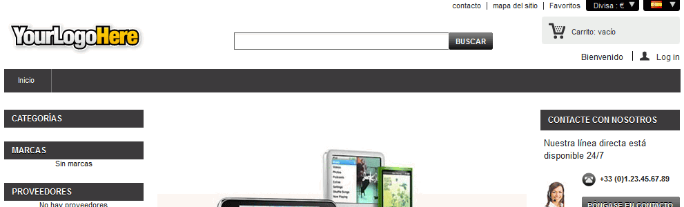
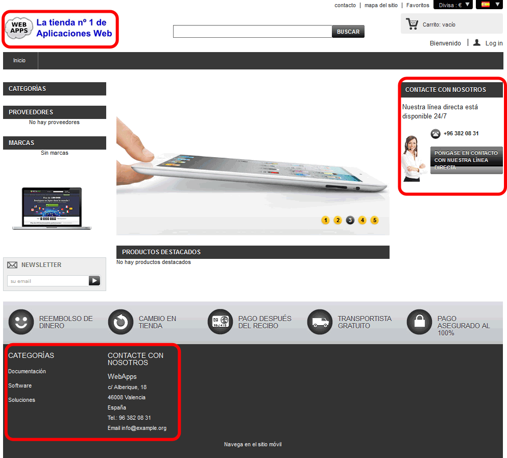
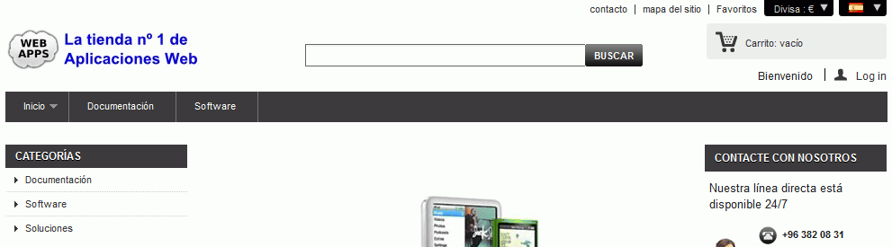
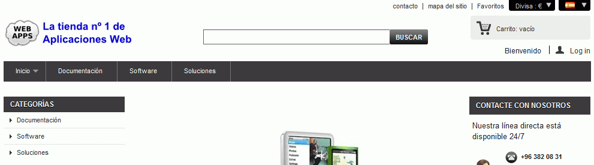
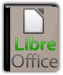
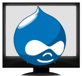
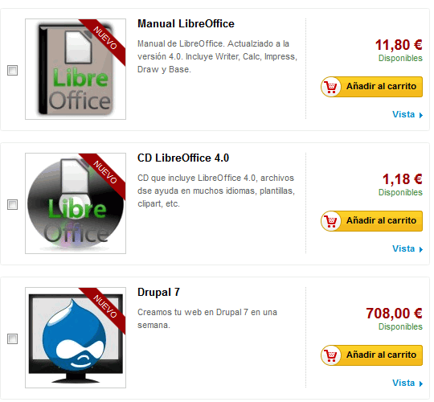
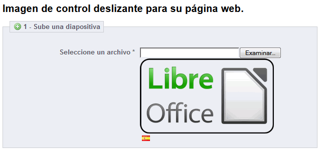
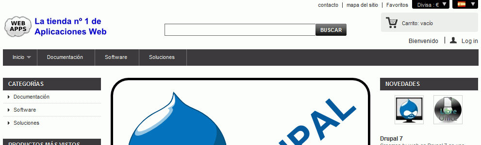
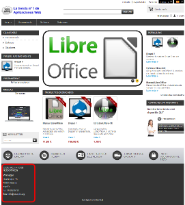

la copia de seguridad de los datos de la aplicación
la carpeta de la aplicación (comprimida en un zip)
1. Descargar la aplicación
Aplicación: Prestashop 1.5.3.1 (31/12/12). PrestaShop es una aplicación de comercio electrónico
Descomprimir PrestaShop en la carpeta prestashop. La aplicación se abrirá en el navegador con la dirección prestashop/index.php.
2. Instalar PrestaShop
Entrar en phpMyAdmin como usuario root y crear un usuario de MySQL con nombre iwb_prestashop_1, contraseña iwb_prestashop_1 y base de datos iwb_prestashop_1.
Abrir en el navegador la dirección prestashop/index.php.
Instalar la aplicación sin datos de productos.
Nombre de la tienda: WebApps
Actividad principal: Informátcia y programas
Demo products: No
Datos del usuario administrador:
dirección de correo: admin@example.org
contraseña: adminadmin
Como usuario no registrado, hacer una captura de toda la pantalla y guardarla como prestashop_1.png:

3. Personalizar página de inicio
Modificar el logotipo del sitio web:
Desactivar los módulos necesarios para que en el pie de página sólo se vea la información de contacto y las categorías.
Modificar los módulos de contactos para que aparezca la información siguiente:
Contacte con nosotros (derecha): 96 382 08 31 / info@example.org
Como usuario no registrado, hacer una captura de toda la pantalla y guardarla como prestashop_2.png:

4. Categorías
Crear tres categorías de productos:
Documentación - Manuales, tutoriales, FAQs, etc. -
Software - Software -
Soluciones - Contrate su aplicación web adaptada a sus necesidades -
Imágenes de categorías:
Como usuario no registrado, hacer una captura de toda la pantalla y guardarla como prestashop_2.png:

Configurar el módulo Menú horizontal superior para mostrar las tres categorías
Como usuario no registrado, hacer una captura de toda la pantalla y guardarla como prestashop_3.png:

5. Productos
Crear los productos:
Documentación: Manual LibreOffice - Manual de LibreOffice. Actualizado a la versión 4.0. Incluye Writer, Calc, Impress, Draw y Base. - 10 € -
Software: CD LibreOffice 4.0 - CD que incluye LibreOffice 4.0, archivos de ayuda en muchos idiomas, plantillas, clipart, etc. - 1 € -
Soluciones: Drupal 7- Creamos tu web en Drupal 7 en una semana. - 600 € -
Imágenes de productos:


Como usuario no registrado, hacer una captura de toda la pantalla de novedades y guardarla como prestashop_4.png:

6. HomeSlider
Configurar el control deslizante para incluir dos imágenes que enlacen al manual de LibreOffice y a la solución Drupal:
Imágenes:
Como administrador, hacer una captura de toda la pantalla una de las dos diapositivas y guardarla como prestashop_5.png:

Como usuario no registrado, hacer una captura de toda la pantalla de inicio y guardarla como prestashop_6.png:

7. Eliminar módulo categorías inferior
Con la opción Posiciones, hacer que no se muestre el módulo Categorías en el pie de página, pero sí se siga mostrando en la parte izquierda.
Como usuario no registrado, hacer una captura de toda la pantalla de inicio y guardarla como prestashop_7.png:

8. Copia de seguridad
Entrar en phpMyAdmin como usuario iwb_prestashop_1, elegir la base de datos iwb_prestashop_1 y exportar las tablas con el método rápido al fichero iwb_prestashop_1.sql.